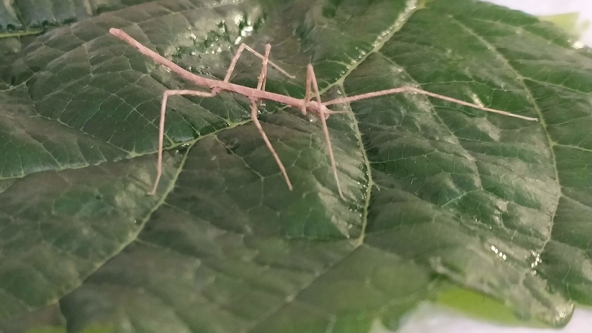
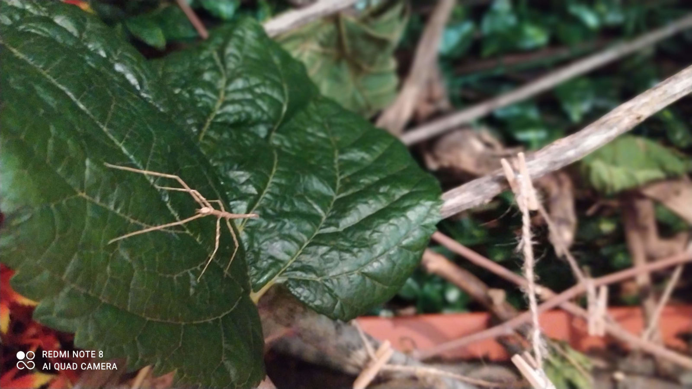
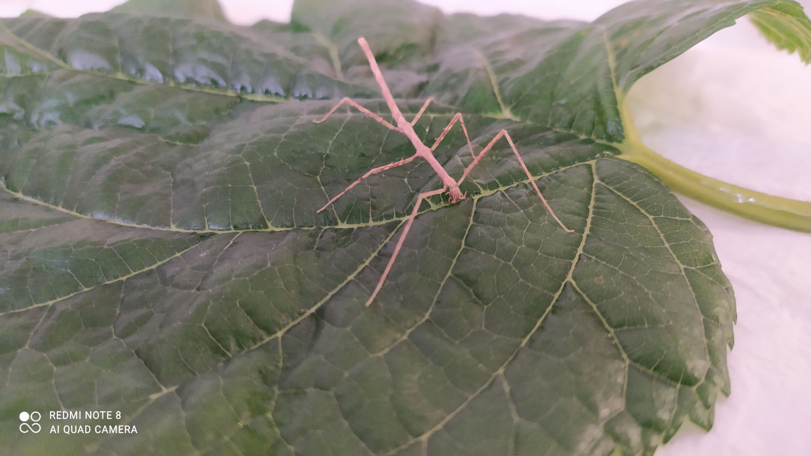
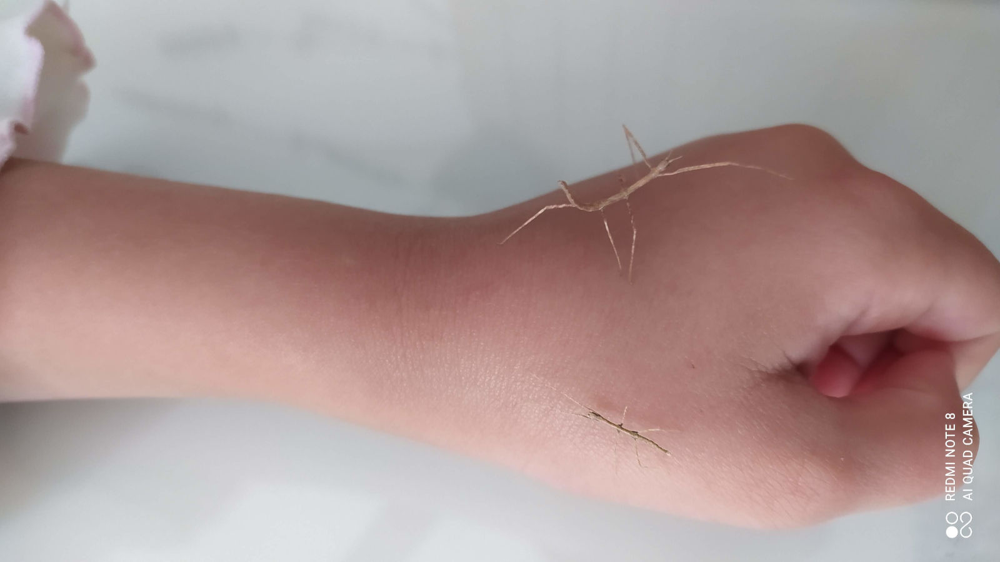
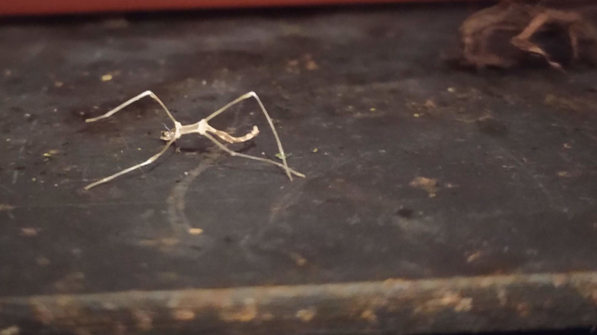
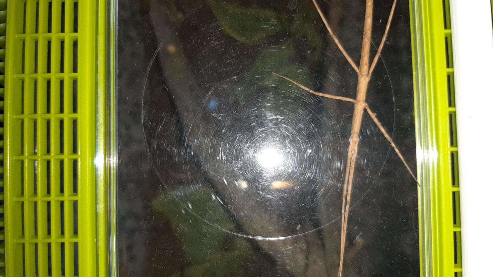
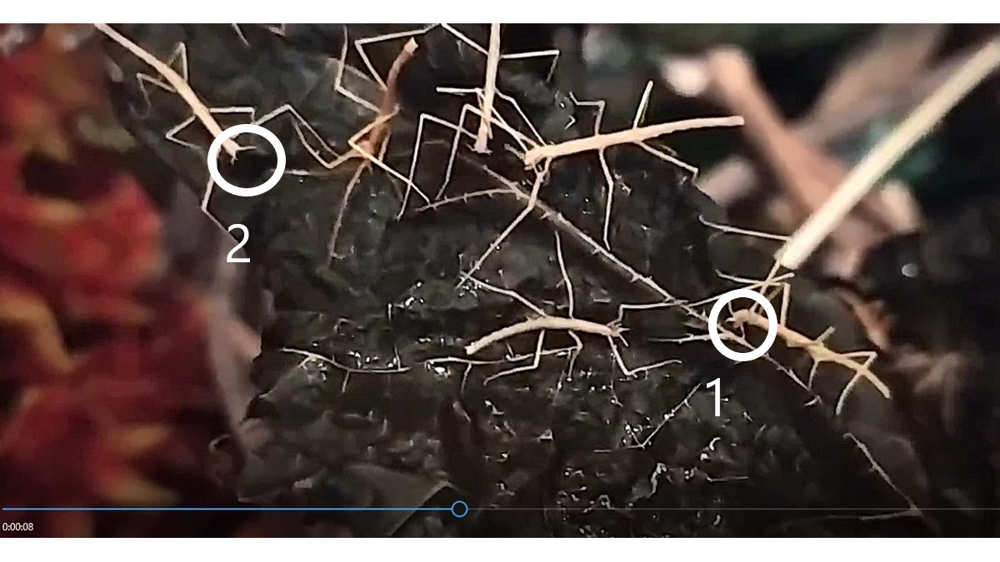

Aspecto del Insecto Palo

Hábitat del Insecto Palo

Alimentación del Insecto Palo
VIDEO. Camina el Insecto Palo

Tamaño del Insecto Palo

Mudas del Insecto Palo

Insecto Palo durmiendo
VIDEO: Cuidados del Insecto Palo

Anatomía del insecto palo
VÍDEO: Verlos comiendo
4 RAZONES PARA ADOPTAR INSECTOS PALO
- Requieren muy pocos cuidados: ideal para aprender a ser responsable de cuidar de una mascota. Mira el vídeo más arriba. Y al adoptar, te entregamos un PDF con instrucciones y consejos.
- Son súper silenciosos: pueden estar en la habitación de los niños
- Son una mascota curiosa: pueden variar su color al mudar su piel, y se mecen simulando el efecto del viento en una rama para despistar a sus depredadores.
- Son sociables y comunitarios: conviven y comparten su alimento y su espacio.